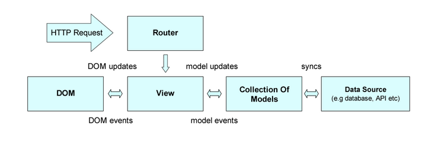

大纲
- Backbone.js简介
- React.js简介
- 为什么用React？
- 怎么用React?
- 搭建示例应用
Backbone.js简介
一个MV*的前端框架
Backbone提供了一个最小集的数据结构(Models, Collections)和用户接口(Views, URLs)，这些对于构建动态的JavaScript应用是非常有用的基本实体
Models(模型)
Models（模型）是任何Javascript应用的核心，包括数据交互及与其相关的大量逻辑： 转换、验证、计算属性和访问控制。你可以用特定的方法扩展 Backbone.Model，Model 也提供了一组基本的管理变化的功能
Collections(集合)是模型的有序组合，把模型组合来管理，可以让我们编写应用逻辑时基于一个组合来通知，它包含了任何一个model的改变，这样也避免了手动去观察单个的model实例
Views(视图)
用户阅读和编辑的模块，可以使用template模板引擎渲染和更新视图内容；在视图中通过添加事件监听到视图中的元素，把事件处理委托给事件处理器
Controller(控制器)
Backbone的Views通常包含了“controller”的逻辑，而且Routers(路由)也用于帮助管理应用状态，但这两者都不是传统MVC模式中真正意义上的控制器，所以它更应该属于MV*框架
Backbone典型请求处理

这里显示了URL路由，DOM事件(比如，鼠标点击)，以及Model事件(比如，属性changes)在View中所有触发器的处理逻辑(handling logic)。handlers会更新DOM和 Models，也可能触发其它事件。Models与数据源同步时有可能带来与后端服务器的通讯
React.js简介
用于构建用户界面的JAVASCRIPT库
- 仅仅是UI
- 虚拟DOM
- 数据流
仅仅是UI
许多人使用React作为MVC架构的V层。 尽管React并没有假设过你的其余技术栈， 但它仍可以作为一个小特征轻易地在已有项目中使用
虚拟DOM
React为了更高超的性能而使用虚拟DOM作为其不同的实现。 它同时也可以由服务端Node.js渲染 － 而不需要过重的浏览器DOM支持
数据流
React实现了单向响应的数据流，从而减少了重复代码，这也是它为什么比传统数据绑定更简单。
为什么用React？
- api 少，类库易学
- 组件化开发，组件内聚，易于组合，易于维护
- 原生组件和自定义组件融合渲染
- 状态/属性驱动全局更新，不用关注细节更新
- commonjs 生态圈/工具链完善
怎么用React？
基础知识
jsx
event
composition
props/state
mixin
form
refs
component api
top api
jsx
类似 xml 的语法，用来描述组件树
React.createElement('div',{
className:'x'
},[
React.createElement('a',{href:'#'},'#'),
React.createElement(Component,{x:'y'},1);
]);
注意和 html 语法不太一样，比如必须是驼峰命名，
以及属性名不能和 js 关键字冲突，例如：className,readOnly
jsx 嵌入变量
可以通过 {变量名} 来将变量的值作为属性值
jsx spread
可以用通过 {...obj} 来批量设置一个对象的键值对到组件的属性，注意顺序
event
可以通过设置原生 dom 组件的 onEventType 属性来监听 dom 事件，例如 onClick, onMouseDown，在加强组件内聚性的同时，避免了传统 html 的全局变量污染
注意：事件回调函数参数为标准化的事件对象，可以不用考虑 ie
组合
我们可以像使用原生 dom 组件一样使用自定义的组件
组合 children
自定义组件中我们可以通过 this.props.children 访问自定义组件的子节点
props
通过 this.props 我们可以获取传递给该组件的属性值，还可以通过定义 getDefaultProps 来指定默认属性值
注意：默认值为所有组件实例共享的
prop validation
通过指定 propTypes 可以校验属性值的类型
注意：校验仅为提升开发者体验
mixin
mixin 是一个普通对象，通过 mixin 我们可以在不同组件间共享代码
form
和 html 的不同点：
- value/checked 属性设置后，用户输入无效
- textarea 的值要设置在 value 属性
- select 的 value 属性可以是数组，不建议使用 option 的 selected 属性
- input/textarea 的 onChange 用户每次输入都会触发（即使不失去焦点）
- radio/checkbox 点击后触发 onChange
controlled components
如果设置了 value 属性，那么改组件变为受控组件，用户无法输入，除非程序改变 value 属性
controlled components
可以通过监听 onChange 事件结合 state 来改变 input 的值
uncontrolled components
设置 defaultValue 为设置 input 的初始值，之后 input 的值由用户输入
类似还有 defaultChecked
ref
该功能是为了结合现有非 react 类库，通过 ref/refs 可以取得组件实例，进而取得原生节点
注意：尽量通过 state/props 更新组件，不要使用该功能
component api
React 组件实例在渲染的时候创建。
- setState 该函数在 setState 执行完毕并且组件重新渲染完成之后调用
- replaceState 类似于 setState()，但是删除之前所有已存在的 state 键，这些键都不在 nextState 中
- forceUpdate 调用 forceUpdate() 将会导致 render() 方法在相应的组件上被调用，并且子级组件也会调用自己的 render()，但是如果标记改变了，那么 React 仅会更新 DOM
- getDOMNode 如果组件已经挂载到了 DOM 上，该方法返回相应的本地浏览器 DOM 元素
component api
- isMounted 如果组件渲染到了 DOM 中，isMounted() 返回 true
- setProps 调用 setProps() 来改变组件的属性，触发一次重新渲染
- setProps 调用 setProps() 来改变组件的属性，触发一次重新渲染
- replaceProps 类似于 setProps()，但是删除所有已存在的 props，而不是合并新旧两个 props 对象
Component Specifications
React.createClass 定义时允许传入的函数，会在特定生命周期内调用
- getInitialState 在组件挂载之前调用一次。返回值将会作为 this.state 的初始值。
- render 返回组件树. 必须设置
- getDefaultProps 在组件类创建的时候调用一次，然后返回值被缓存下来
- propTypes 允许验证传入到组件的 props
- mixins 允许使用混合来在多个组件之间共享行为
- statics 允许你定义静态的方法，这些静态的方法可以在组件类上调用
Component Specifications
- displayName 字符串用于输出调试信息。JSX 自动设置该值
- componentDidMount 渲染到 dom 树中调用，只在客户端调用，可用于获取原生节点
component lifecycle
许多方法在组件生命周期中某个确定的时间点执行
- componentWillMount 在初始化渲染执行之前立刻调用
- componentDidMount 在初始化渲染执行之后立刻调用一次
- componentWillReceiveProps 在组件接收到新的 props 的时候调用。在初始化渲染的时候，该方法不会调用
component lifecycle
- shouldComponentUpdate 在接收到新的 props 或者 state，将要渲染之前调用
- componentWillUpdate 在接收到新的 props 或者 state 之前立刻调用
- componentDidUpdate 在组件的更新已经同步到 DOM 中之后立刻被调用
- componentWillUnmount 在组件从 DOM 中移除的时候立刻被调用
top api
- React.createClass 创建组件类
- React.createElement 创建并返回一个新的指定类型的 ReactElement
- React.createFactory 返回一个生成指定类型 ReactElements 的函数
- React.render 渲染一个 ReactElement 到 DOM 中
- React.unmountComponentAtNode 从 DOM 中移除已经挂载的 React 组件，清除相应的事件处理器和 state
- React.renderToString 把组件渲染成原始的 HTML 字符串,该方法应该仅在服务器端使用
- React.renderToStaticMarkup 和 renderToString 类似，除了不创建额外的 DOM 属性，例如 data-react-id，因为这些属性仅在 React 内部使用。
- React.isValidElement 判断对象是否是一个 ReactElement
- React.DOM 运用 React.createElement 为 DOM 组件提供了方便的包装，仅在未使用 JSX 的时候适用
- React.PropTypes 包含了能与组件 propTypes 对象共用的类型，用于验证传入组件的 props
- React.initializeTouchEvents 配置 React 的事件系统，使 React 能处理移动设备的触摸（ touch ）事件
- React.Children 为处理 this.props.children 这个封闭的数据结构提供了有用的工具。
搭建示例应用
显示数据-->点击按钮-->更新数据
React开发步骤
- 拆分用户界面为一个组件树
- 利用 React ，创建应用的一个静态版本
- 识别出最小的（但是完整的）代表 UI 的 state
- 确认 state 的生命周期
- 添加反向数据流
组件分解
-
顶层 HelloComponents
-
信息显示区 HelloInfo
-
信息表单 HelloForm
Backbone+React整合
- 构建Backbone的Model
- 将构建好的Model对象、获取Json数据的方法，传入React顶级组件中
- 构建Model的mixin对象，设定到顶级组件中